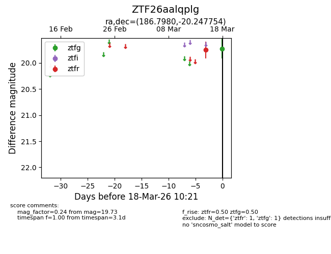
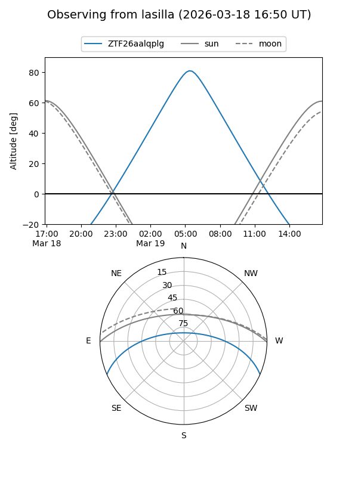
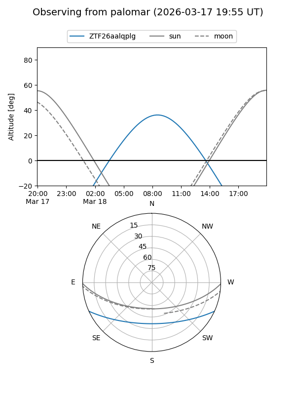

ZTF26aalqplg
Target ZTF26aalqplg at 2026-03-18 10:23
Aliases and brokers:
FINK: link
Lasair: link
ALeRCE: link
alt names
ZTF26aalqplg (ztf,fink_ztf)
Coordinates:
equatorial (ra, dec) = 186.7980,-20.24775
equatorial (HMS+DMS) = 12:27:11.52,-20:14:51.91
galactic (l, b) = (295.2390,+42.26154)
Flags:
Photometry:
last ztfg=19.73, ztfr=19.75
1 ztfg, 1 ztfr detections
Lightcurve

Visibility


Additional plots